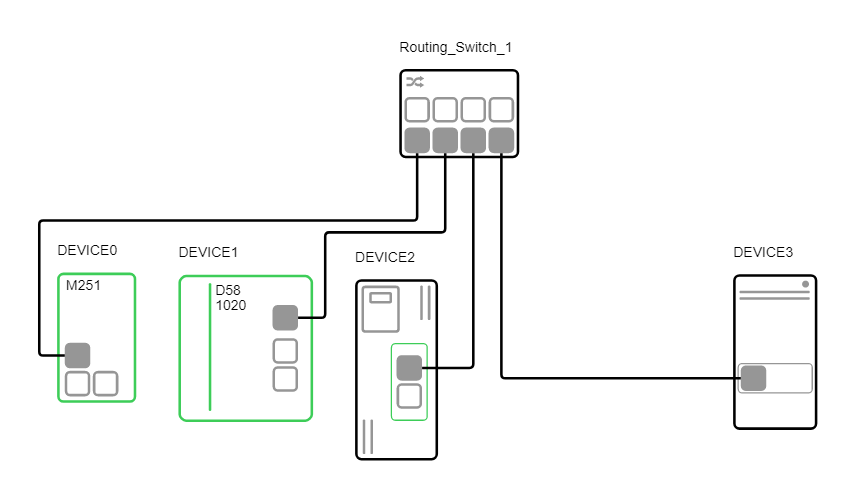
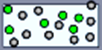
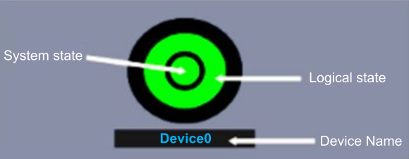
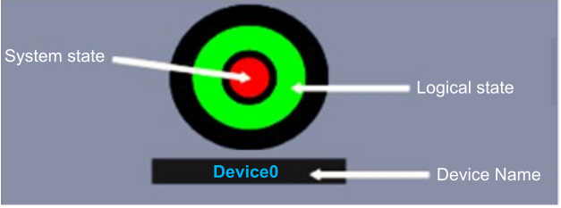
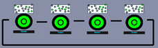
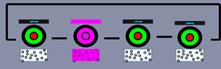
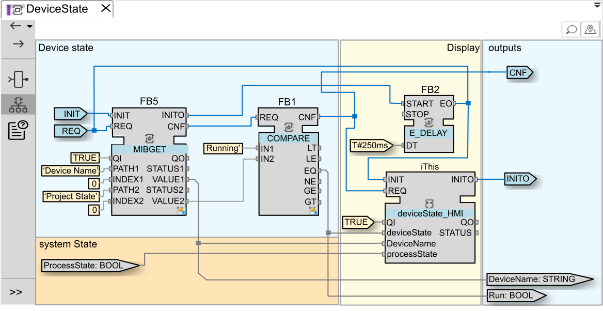

The sample project used to illustrate the proposed design patterns is comprised of a process split between four devices that all need to be up and running before starting the execution of the logic.

The application logic (Fake Process CAT) simulates the random lighting of a set of bulbs.

The state of each device and of the overall system can be computed and visualized implementing a simple Device State CAT.


Now if the devices are chained together (meaning two adjacent devices exchanging information), the application can compute the logic to set the correct system state depending on all devices states.


The logic of the Device State gets data from the current device (name, current project state) to fill the display interface.
